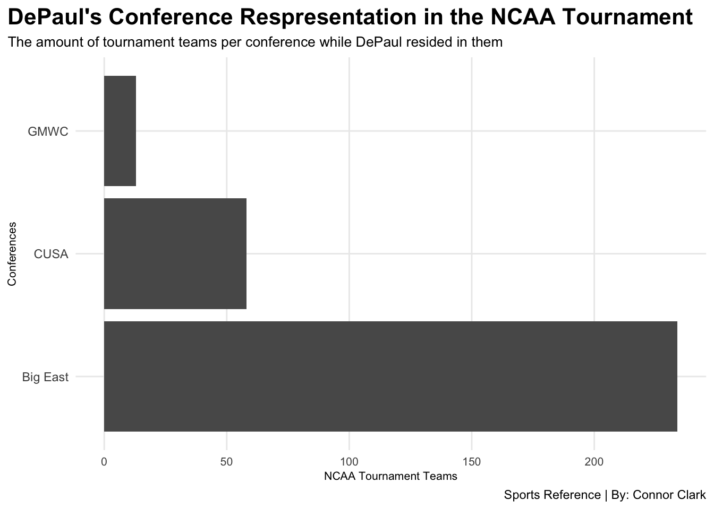
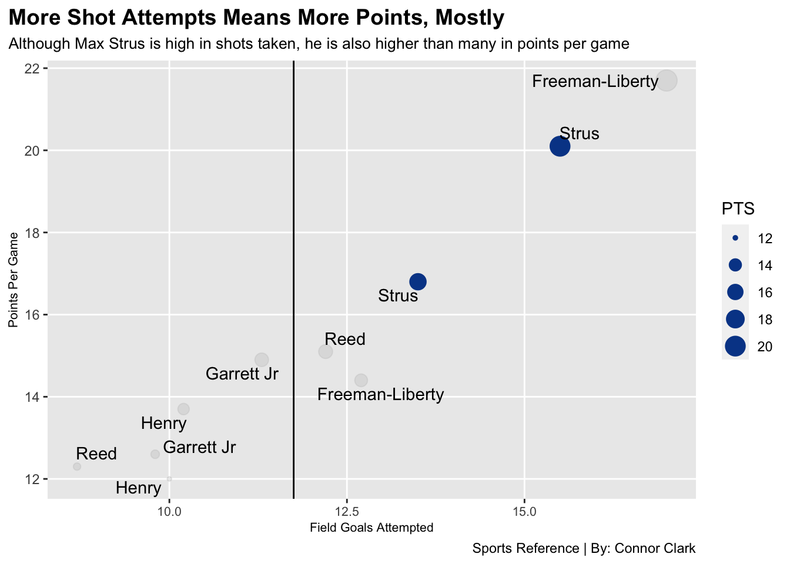
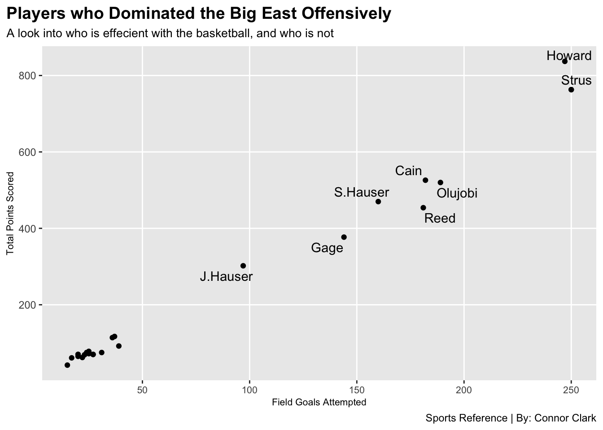

Max Strus is one of the best scorers DePaul has seen
basketball
NCAA
DePaul
Author
Connor Clark
Published
November 4, 2022
DePaul basketball is a program that lies in the heart of the city of Chicago, and one that used to see a lot of success on the hardwood. Rewind to the 19080s and 90s, the Blue Demons were a regular in the NCAA tournament, even the final four a pair of times. Since then the success hasn’t been where players and coaches have wanted it, but it seems like the tide is slowly turning back to relevancy.
One of the biggest reasons why that turn is starting to happen is the talent that has come through the campus of Lincoln park. DePaul has started to see more NBA draft picks and prospects, which has made DePaul a more attractive destination for talented players.
One of those players made his impact early and often, and now is regarded as one of the best scorers in DePaul history, Max Strus. The now Miami Heat shooting guard was fantastic at DePaul, earning multiple awards team and conference wide as well as being towards the top of scoring leader boards in the Big East. In addition, Strus is doing this is the best conference DePaul has ever played basketball. The Big East produces tournament teams and contenders like no other year in and year our, and that us very apparent when the amount of tournament teams are compared to DePaul’s former conferences.
The data I gathered for this particular chart, and the rest of the charts you will see in this blog, are from sports-reference.com, a site that allows you to get in-depth statistics on practically any sport, coach player, or team.
Code
library(tidyverse)library(ggrepel) Conferences <-read_csv("Conferences.csv")DPUPlayers <-read_csv("DPUPlayers.csv")ScoringLeaders <-read_csv("ScoringLeaders.csv")Connor<-Conferences %>%separate(Season, into=c("Season", "Conference"), sep=" ", extra ="merge")ggplot() +geom_bar(data=Connor, aes(x=Conference, weight=NCAA))+labs(title ="DePaul's Conference Respresentation in the NCAA Tournament",subtitle ="The amount of tournament teams per conference while DePaul resided in them",caption ="Sports Reference | By: Connor Clark",x ="Conferences",y ="NCAA Tournament Teams") +theme_minimal() +theme(plot.title =element_text(size =16, face ="bold"),axis.title =element_text(size =8), plot.subtitle =element_text(size=10), panel.grid.minor =element_blank(),axis.text.x =element_text(size=8), plot.title.position ="plot") +coord_flip()

The Big East is not only the most supirior conference DePaul has ever played in, but it is one of the premier basketball conferences in college basketball. With teams like Villanova, Creighton, Seton Hall, St. Johns, the list goes on with historical teams and moments.
When it comes to individual performances in the DePaul basketball program, there are some very recognizable names such as George Mikan, NBA Hall of Famer, and Mark Aguire. Now Strus may not live up to the stature that these guys have (who knows maybe one day) but he does stack up pretty well with guys who have played in the conference era of DePaul basketball.
I took a handful of players from the Blue Demons that played in the last decade, and stats from their best two seasons at DePaul, and stacked them up against each other with how points they scored per game on the amount of shots they took per game (offensive effeicienty essentially).
Strus thrived in this chart as he played two seasons with DePaul, averaged at least 16.0 points per game in his time there on over 40% shooting. Pretty good right? Let’s see how it stacks up versus guys such as now Bulls G-Leaguer Javon Freeman-Liberty, Philadelphia 76er Paul Reed and others.
Code
Strus <- DPUPlayers %>%filter(Player =="Strus")ggplot() +geom_point(data=DPUPlayers, aes(x=FGA, y=PTS, size=PTS), color="grey", alpha=.3)+geom_point(data=Strus, aes(x=FGA, y=PTS, size=PTS), color="#054696") +geom_vline(xintercept =11.75) +geom_vline(yintercept =15.00) +geom_text_repel(data=DPUPlayers, aes(x=FGA, y=PTS, label=Player) ) +labs(title ="More Shot Attempts Means More Points, Mostly",subtitle ="Although Max Strus is high in shots taken, he is also higher than many in points per game",caption ="Sports Reference | By: Connor Clark",x ="Field Goals Attempted",y ="Points Per Game") +theme(plot.title =element_text(size =14, face ="bold"),axis.title =element_text(size =8), plot.subtitle =element_text(size=10), panel.grid.minor =element_blank(),axis.text.x =element_text(size=8), plot.title.position ="plot")
Warning: Ignoring unknown parameters: yintercept

Now, if we are being honest here, DePaul’s talent pool obviously isn’t the best in the Big East, so it seems pretty easy to see why Max Strus would be towards the top of that chart when it comes to scoring efficiency. So, let’s bring players from around the Big East into the picture shall we?
The list of the top-25 scorer in the Big East Conference in 2018-19 is a rather impressive list. Markus Howard from Marquette is atop the list, arguably one of the most electrifying college basketball players the conference has ever seen. Who is second on the list? Yep, Max Sturs out of DePaul.
Code
library(tidyverse)head(ScoringLeaders)
# A tibble: 6 × 9
Player School GP MIN FG `3FG` FT PTS AVGP
<chr> <chr> <dbl> <dbl> <dbl> <dbl> <dbl> <dbl> <dbl>
1 Howard Marquette 34 1125 247 114 229 837 24.6
2 Powell Seton Hall 6 184 37 18 25 117 19.5
3 Strus DePaul 40 1448 250 122 141 763 19.1
4 Ponds St. John's 7 179 36 12 30 114 16.3
5 Baldwin Butler 5 141 27 4 12 70 14
6 S.Hauser Marquette 34 1077 160 82 68 470 13.8
Code
Max <- ScoringLeaders %>%filter(Player =="Strus")head(Max)
# A tibble: 1 × 9
Player School GP MIN FG `3FG` FT PTS AVGP
<chr> <chr> <dbl> <dbl> <dbl> <dbl> <dbl> <dbl> <dbl>
1 Strus DePaul 40 1448 250 122 141 763 19.1
Code
ggplot() +geom_point(data=ScoringLeaders, aes(x=FG, y=PTS) ) +geom_point(data=Max, aes(x=FG, y=PTS), color="black") +geom_text_repel(data=ScoringLeaders, aes(x=FG, y=PTS, label=Player) ) +labs(title ="Players who Dominated the Big East Offensively",subtitle ="A look into who is effecient with the basketball, and who is not",caption ="Sports Reference | By: Connor Clark",x ="Field Goals Attempted",y ="Total Points Scored") +theme(plot.title =element_text(size =14, face ="bold"),axis.title =element_text(size =8), plot.subtitle =element_text(size=10), panel.grid.minor =element_blank(),axis.text.x =element_text(size=8), plot.title.position ="plot")
Warning: ggrepel: 17 unlabeled data points (too many overlaps). Consider
increasing max.overlaps

Strus has made his mark on the DePaul basketball program. A kid who grew up in Hickory Hills, Illinois, started his collegiate career at division II school Lewis University, and now a starter on the Miami Heat, one of the best teams in the NBA. His journey is rather inspiring and impressive, and his accomplishments at DePaul university, and in the Big East shouldn’t go unnoticed.